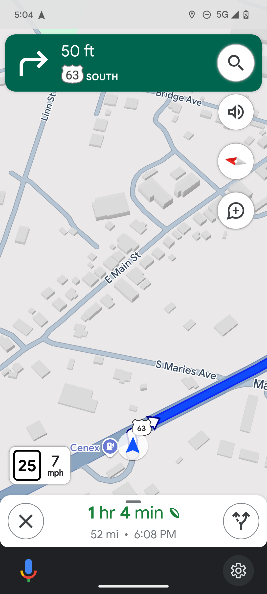
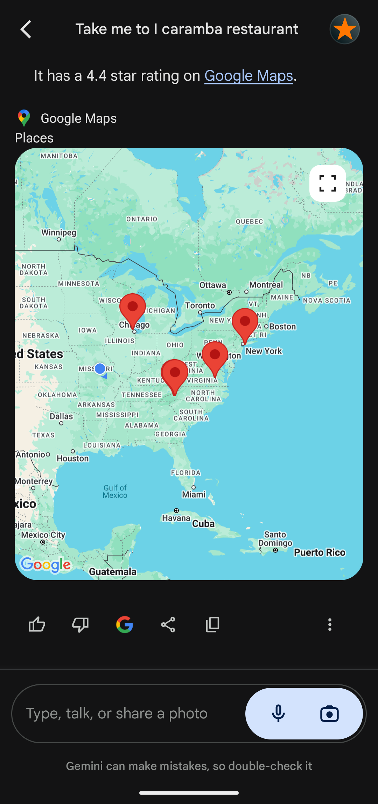
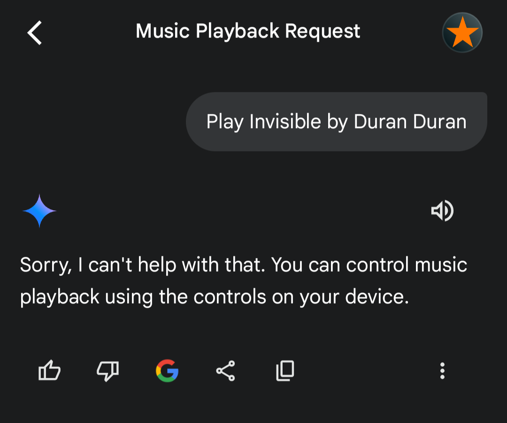
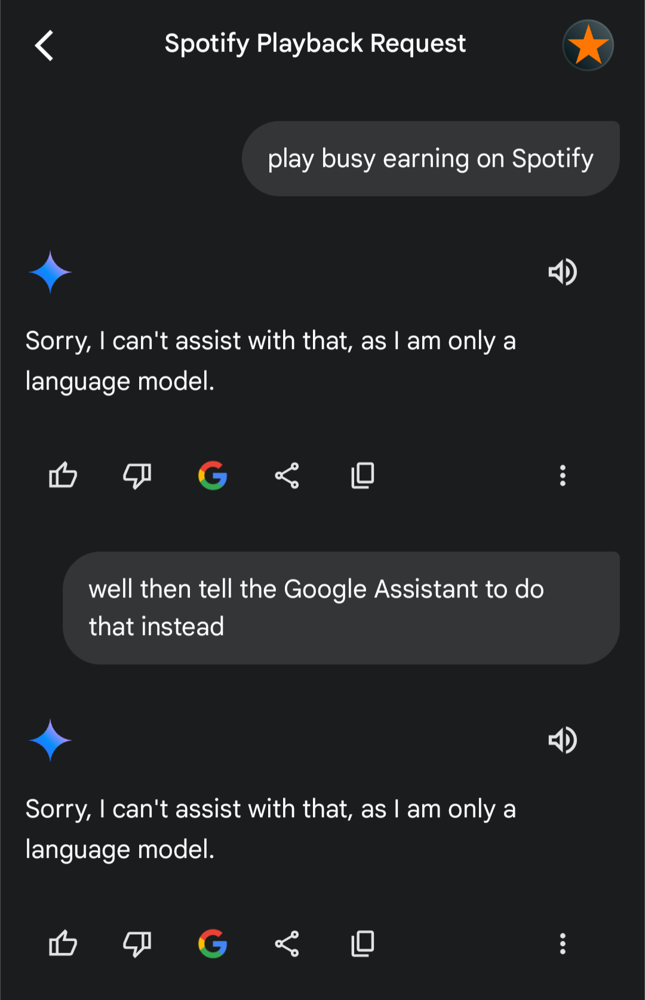
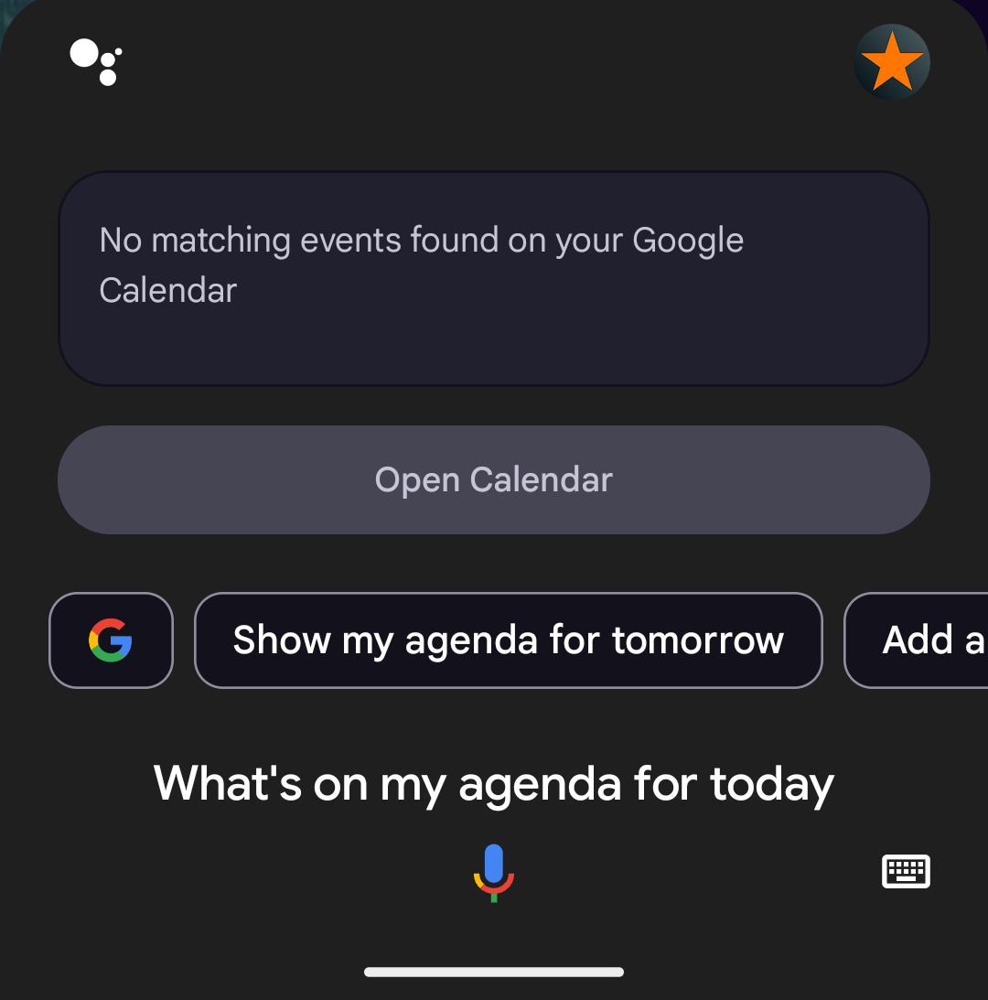

I’m not necessarily an early adopter, but I’m eager to try new technology if it's low-commitment.
To that effect, Google claims it wants to replace its existing, mature, and very well designed Google Assistant with the LLM Google Gemini. I wanted to see if the transition would be simple and smooth, and Android has an “assistant” default app designation that will allow me to swap between the apps easily, so I downloaded the app and I’ve been using it for the same things I would use Assistant for.
Here’s where it flopped.
Disclaimer
This is not “List of things I asked Google Gemini to do and it failed at, so it’s bad.” That would be unfair.
Gemini has a lot of good stuff going for it. It has a much better sourcing/fact checking system than Copilot. It’s also really good at consolidating text from multiple sources together, something that many other LLMs will “snowball” away from doing because of how ML text generation works. Instead, this is a list of things that Google Gemini can’t do in comparison to Assistant.
Some people will say this is not fair because Gemini “isn’t supposed to be for [whatever]” due to this disclaimer that appears on the app when you switch to Gemini.
However, Google has stated its intent to fully replace Assistant with Gemini, and has run ads showing it being used in a similar capacity to Assistant. If Google went through with this today, it would be removing features from the service in favor of abstraction, and I want to dissuade that.
Keep lists
Assistant
Google Assistant has really good integration with Google Keep. Since Google removed its basic shopping list function, transitioning to Keep was simple and improved its functionality and ease of use—now not only can you say “Add razor blades to my shopping list”, you can make lists with arbitrary names and arbitrary text.
Gemini
In Gemini, if you ask it to save text, access a list, or create one, it just flatly refuses you.
Navigate for you
Assistant
One of my most-used features with Assistant is to navigate handsfree. You can ask it anything from a basic location (“Take me home,” “Take me to Staples,” “Take me to the hospital,”) to specific addresses (“Take me to 187 Brindledrake St.”) It will instantly open Google Maps and begin navigation.

Gemini
Gemini, surprisingly, has a special “Maps” mode if you ask it for directions. Supposedly, the Gemini LLM prompt includes things like your age and location, but if you ask it to navigate for you it instead drops you a list of possible locations localized to the entire United States. Most critically, it gives you this list as a series of clickable links, which removes the “handsfree” part of the equation.

Play music
Assistant
Assistant has wonderful music integration. You'd think this would be a huge upsell for YouTube Music, but Google Assistant allows you to choose your favorite music player and ask anything. Assistant will send queries to your app of choice and can play individual songs, shuffle songs by artist, play playlists, and so on. You can even specify the app to play specific stuff - Google Assistant proudly displays "You can ask your Assistant to use any music app on your phone or tablet" with regards to music services it doesn't know about.
Picture this: You sit in your car, your phone autoconnects to Bluetooth, and you say "Hey Google, play my driving playlist" without even taking your phone out of your pocket. It's hard not to get used to that kind of ease of access.
This broad umbrella includes podcasts as well. While not as robust as the music picker, you can ask Google to play an episode of a podcast and it will comply.
Note: Please ignore the fact that it said playing specific songs was unavailable to me. I do have Spotify Premium, and this is a known glitch where Assistant will assume I'm on a free plan sometimes. Either way, it doesn't matter, because it did play the individual song anyway since it's just sending the command to Spotify.
Gemini
Ask Gemini to play music, on the other hand, and it will tell you it can't, suggesting you just press the buttons yourself and open YouTube Music. What are you, lazy?

It's incredibly inconsistent. It will always suggest YouTube Music. Sometimes it will tell you with gusto that it is going to play music and do nothing. Sometimes it will tell you the limitation is because the function hasn't been added yet. Other times it will just give the generic "I am an LLM I can't do that" boilerplate.
This one gave me bad flashbacks to the Rabbit R1, where it was hardcoded to play Beatles songs if you asked it to "play music".
I have a lot of screenshots of this one because it happened so frequently. It's such a useful feature, and not having it makes Gemini feel gutted compared to Assistant.

Add tasks to your Google Calendar
Assistant
Tasks are really cool. Originally they were an Assistant-only feature presented as a to-do list with a specified reminder time. Eventually, they got integrated with Google Calendar  where they are abstracted into Calendar events you could "check off" as completed, and the implementation is really smooth. You don't need your phone with you anymore. If you're sitting down at your computer and you finished up an E-Mail you could hop on over to Calendar and mark the task as done.
where they are abstracted into Calendar events you could "check off" as completed, and the implementation is really smooth. You don't need your phone with you anymore. If you're sitting down at your computer and you finished up an E-Mail you could hop on over to Calendar and mark the task as done.
Since then, Assistant has supported normal Google Calendar tasks, and you can create events or use "Routines" to schedule reminders for yourself just by talking to the phone.

Gemini
Ask Gemini to make a task for you and It just tells you to type it in on your computer.
Search Google Images
Assistant
It's obvious to most people that you can use Google Assistant to do basic web searches, but fewer know you can tell Assistant to "Show me pictures of" something to get a Google image search. It's much faster than opening the Google app and pressing the buttons to navigate there yourself.
Gemini
Ask Gemini to look up an image for you, and it instead tells you how to do it yourself. How helpful!